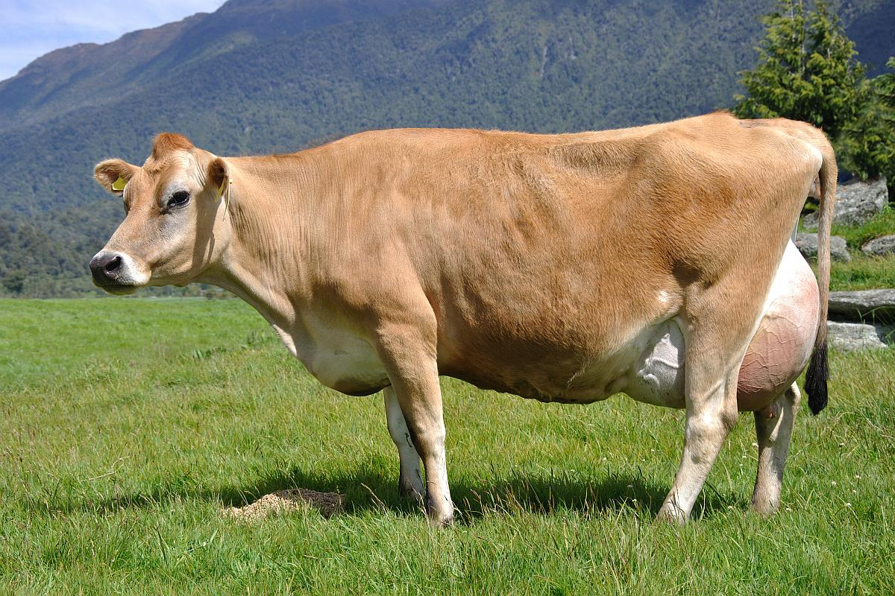
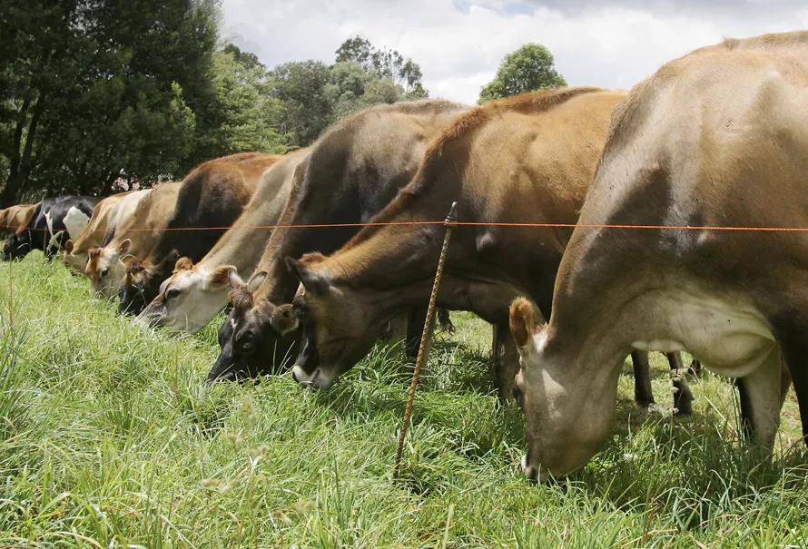
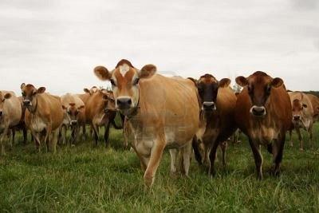

Jersey
LecheLa pequeña gigante – Eficiencia energética y riqueza en sólidos lácteos

Clic para ampliar
Origen
Isla de Jersey (Canal de la Mancha)
Aptitud
Leche para derivados y quesería
Color
Cervato, marrón claro u oscuro
Grasa en Leche
4.8% – 5.5% (La más alta)
Parámetros Zootécnicos & Potencial Productivo
Contenido Graso y Proteico
99%
Eficiencia por kg de Peso
98%
Facilidad de Parto
99%
Tolerancia al Calor
88%
Características Sobresalientes
- Raza compacta que consume menos alimento por mantenimiento y destina la mayor parte de su energía a la leche.
- Su leche contiene hasta un 25% más de grasa y un 18% más de proteína que la leche estándar.
- Precocidad sexual notable: alcanza el primer celo y parto a menor edad que cualquier otra raza lechera.
- Excelente adaptabilidad a pastoreo y muy baja incidencia de distocias o problemas en el parto.
Posicionamiento en el Mercado
Preferida por plantas queseras que pagan bonificación por sólidos totales y grasa butírica de alta calidad.
Galería de Ejemplares en Hato

Jersey en pastoreo verde

Rebaño Jersey en el campo